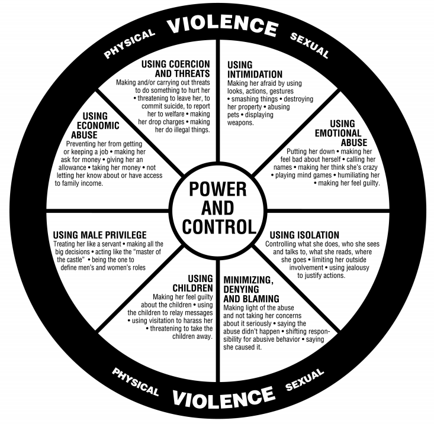

In domestically violent situations, abusers use varying tactics to gain and maintain power and control over the victim. Nearly three in ten women and one in ten men in the United States have experienced
rape, physical violence, and/or stalking by an intimate/former partner.
Victims experience these or other forms of violence behavior in the relationship:
Feeling fearful, concern for safety,
post-traumatic stress disorder (PTSD), depression,
need for health care, injury, crisis support, need for housing services, etc

Note: the Power and Control Wheel assumes she/her pronouns for the victim and he/him pronouns for the perpetrator, but the abusive behavior that it details can happen to people of any gender or sexuality.
Attached is a wheel libraray containing different languages
What starts as simple verbal abuse and threats of violence, most of the time, progresses to assault, rape, and even murder.
Illustrations of the power and control wheel and the post-separation power and control wheel developed by the Domestic Abuse Intervention Project offers a useful tool to understand the overall pattern of abusive and violence behaviors used by abusers.
Very often, one or more violence incidents are accompanied by an array of these other types of abuse. They are less easily identified, yet firmly establish a pattern of intimidation and control in the relationship.
Also, bear in mind that children witnessing domestic violence progress to a cycle of violence where they may be future aggressors or victims of domestic violence out of its normalcy growing up.
Most of the time, women feel like they cannot go anywhere, as they have no financial capability to do it; neither do they have the will power to pick up and run. They come to accept abuse as a norm, based on a cycle of psychological, emotional, physical, and financial abuse.
There are many resources available for victims of domestic violence, including calling law enforcement and prosecution. Restraining orders can also be sort after, plus institutional support.
Documenting the warning signs of dating abuse (in every form that it occurs) will help provide proof of your partner’s behavior if you ever need it, for legal reasons or otherwise.